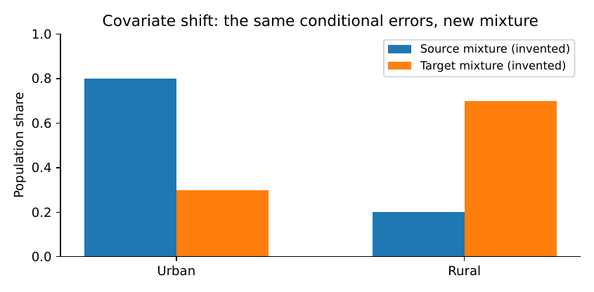

Adapting Solutions Across Countries and Contexts
The same equations can be useful in Uganda, Nepal or Peru without producing the same policy recommendation. This chapter distinguishes what can travel—a mathematical argument, an algorithm, a data schema—from what must be learned again: local demand, geography, regulations, costs and institutions. We derive a simple transport formula, show when it fails, and construct a practical adaptation record for new settings.
Why a successful pilot is not a universal answer
Suppose a health district introduces a reliable stock-planning tool and observes improved availability under a credible evaluation. A neighbouring district asks for a copy. The same code may run, but the medicines, lead times, budgets, staffing, data definitions and patients are not identical. There are at least three separate questions. Does the software run on the available devices? Does the prediction remain accurate with the new population? Does the intervention improve the outcome after local implementation? Passing the first test implies neither of the other two.
The challenge becomes more visible across countries. A water-service model fitted using urban demand data may be applied to rural settlements with different dry-season patterns. Distances computed on a road map may hide travel routes impassable after rainfall. A clinic may record prescriptions, while another records only items dispensed. The same variable name can describe different measurements. Good adaptation begins with those differences, not by changing the country name on the cover of a report.
We should also resist a misleading division between “advanced” and “low-resource” countries. Contextual limits exist everywhere. A rural district in a high-income country may lack reliable transport, while a large hospital in a lower-income country may have sophisticated infrastructure. The analytical question is which assumptions change, and whether the proposed decision remains justified.
An inventory of what can and cannot transfer
The basic conservation identity in Chapter section remains valid wherever physical stock is counted consistently. The empirical distribution of lead times is local. The same binary decision variable used in Chapter section can express whether a facility is opened, but the candidate sites, staffing and affordability require new evidence. The offline transaction requirements of Chapter section may travel almost directly; local-language labels and record-retention rules do not.
| Object | Often portable | Must be checked locally |
|---|---|---|
| Physical model | Conservation law and units | Boundary, loss terms, measurement method |
| Statistical model | Estimator, validation procedure | Sampling frame, conditional relationships, calibration |
| Optimisation | Mathematical formulation and solver | Costs, feasible sites, capacities, constraints |
| Software | Transaction and backup patterns | Devices, language, legal permissions, support |
| Intervention | Logic of the causal evaluation | Actual adoption, comparison, population and effects |
A Country Adaptation Record should describe the target institution, outcome definitions, differences from the source setting, new data requirements, feasibility tests, recalibration plan, legal checks and decision authority. A “transfer complete” label should be withheld until its specified acceptance tests pass.
Three distinct sorts of shift
Let denote recorded predictors, the outcome of interest and the setting. A prediction system trained in a source setting is commonly evaluated in a target setting . Three situations deserve distinct names.
Covariate shift.
The distribution of recorded inputs changes, , but the conditional outcome relationship remains invariant: . An example would be a different mix of rural and urban facilities, with the same outcome mechanism within each properly measured group. This is an assumption requiring evidence, not an automatic property of a map.
Conditional or concept shift.
The relationship itself changes. A lead-time predictor may change because procurement contracts, roads or delivery schedules differ even after controlling for recorded inputs. Reweighting the source data cannot generally correct this problem.
Measurement shift.
The recorded variable changes its meaning or error mechanism. One site counts demand as prescriptions, another counts actual issues, and a third counts received orders. Even if the underlying physical process were similar, the observed is not. A model can look surprisingly good against a flawed reference outcome while making poor decisions.
The distinctions help choose a response. Reweighting, recalibration, refitting, revised measurement or a complete redesign solve different problems. The covariate-shift literature gives one precise set of tools and limitations (Sugiyama and Kawanabe 2012; Ovadia 2019).
Derive the transport identity
Let be the loss for fixed predictor , with and the source and target joint distributions. Assume the target input distribution is absolutely continuous with respect to the source input distribution: wherever , the source density is positive as well. Assume further that . Then
The ratio is an importance weight. Equation equation is an identity under stated assumptions, not proof that weights are estimable from a tiny dataset (Sugiyama and Kawanabe 2012).
Proposition {#sec-ch11-risk} Suppose the source and target admit joint densities, , almost everywhere on the target support, and the weighted loss is integrable. Then equation holds.
Proof. Starting from the source expectation, substitute the factorisation :
$$
$$
Support inclusion makes the ratio well-defined where it contributes; integrability permits the stated expectations. ◻
Example. Suppose a binary error occurs at rate in urban facilities and in rural facilities. In the invented source sample, of facilities are urban, giving source risk . In the target region only are urban, giving target risk . The model has not changed; the population has. The importance weights are for urban units and for rural units. Weighting the source conditional errors recovers the target risk only if the conditional error rates really remain the same.

Why weights do not create information
The transport identity can be useless in practice if a target population contains categories absent from the source, or if a few source observations receive enormous weights. For nonnegative sample weights , a common descriptive effective-sample-size diagnostic is
It equals for equal positive weights and approaches one when nearly all weight concentrates on a single observation. This is not an exact number of independent observations; it signals potential instability. The weight estimates also have uncertainty, which should not be hidden by evaluating a plug-in weighted risk as though the weights were known.
Proposition {#sec-ch11-ess} For and nonnegative weights not all zero, .
Proof. Since , the lower bound follows. Cauchy–Schwarz gives , yielding the upper bound. ◻
Clipping weights reduces variance but generally changes the estimand by introducing bias. If such regularisation is used, report the threshold and examine sensitivity. A target population with important unrepresented groups needs new measurements, not more aggressive mathematics.
Transporting an intervention is harder than transporting prediction
Equation equation concerns predictive loss. A credible causal effect in one place does not automatically transfer when clinicians, suppliers or institutions act differently. Under additional assumptions, the target effect can be written
But this requires transportability of conditional causal effects, suitable overlap and valid identification of those effects in the source. If the new setting has different implementation intensity or an unmeasured effect modifier, the formula is not justified. Causal selection diagrams offer a more general language for expressing which mechanisms differ (Pearl and Bareinboim 2014; Hernán and Robins 2020).
Example. In one district, forecasting is the binding problem: orders are generally delivered on time, but quantities are often too low. A better forecast could reduce shortages. Elsewhere, quantities are adequate but deliveries are delayed for weeks. Reusing the forecast model may improve prediction scores without improving medicine availability. The active causal mechanism has changed. The second district may need procurement reform or a buffer-stock policy, not a more complex prediction model.
This example also shows why a headline such as “the model improves access to medicines” is incomplete. It may be true for one operating system and false in another. The report must identify the intervention and the surrounding mechanism.
Local data can be sparse without being ignored
Adapting models often requires balancing information borrowed from the source with a small target sample. A hierarchical formulation might describe a site-specific parameter as
$$
jN(,^2), _j_jN(_j,s_j^2).
$$
Under this explicitly Gaussian model, the posterior mean of for fixed hyperparameters is a precision-weighted average:
No real service parameter is guaranteed to follow the Gaussian model. Its value is explanatory: noisy local estimates can borrow strength without being treated as identical. Measurement mismatch or severe nonexchangeability can make such pooling misleading (Gelman and Hill 2007).
Before fitting a sophisticated hierarchical model, ask whether the new setting has enough reliable observations to check its assumptions. A small, well-audited local dataset may be worth more than millions of poorly aligned records from another institution.
Transfer also changes optimisation and fairness
Prediction is only one input to a decision. In location planning, demand estimates, travel-time matrices, candidate sites, clinic capacity and cost limits may all change. A solution that minimises source cost need not be feasible in the target setting:
$$
a_s^F_sa_s^F_t.
$$
Even if the same problem formulation is appropriate, the target optimum is
The target feasibility set should incorporate genuine local limits: staffing, road accessibility, budget, legislation and protected service standards. Replacing source prices with target prices without checking the rest of the constraints is not a complete adaptation.
Proposition {#sec-ch11-decision} Suppose source and target share a feasible set , and their objective functions satisfy . If minimises and minimises , then
$$
0J_t(a_s)-J_t(a_t).
$$
Proof. Insert and between the two target values:
$$
$$
Nonnegativity follows because is target-optimal. ◻
The proposition gives a useful conditional guarantee: if every decision’s expected cost changes by at most and feasibility does not change, source optimisation incurs at most regret in the target. It does not say that is small. The most valuable transfer task may be to measure or bound the shift. If the feasible set changes, the proof cannot be applied as written.
A reproducible cross-context teaching investigation
Our central teaching case considers water-service access in four illustrative district settings labelled Uganda, Kenya, Nepal and Peru. The labels signal intended contexts for later data collection; the numbers inside the supplied script are intentionally invented and should never be reported as country statistics. In each setting we vary settlement distribution, a resource limit and an assumed unit travel burden. The same facility-allocation logic is used, but we re-estimate demands and re-solve the decision rather than blindly copying the original site’s solution.
For real work, appropriate starting points include the WHO/UNICEF Joint Monitoring Programme, whose datasets and documented application programming interface provide WASH estimates at several geographic levels where available (WHO/UNICEF Joint Monitoring Programme 2026); national statistical services; geospatial and road data with licence and completeness checks; and locally verified infrastructure and cost records. National WASH percentages alone do not identify travel times, village-to-tap distances or facility construction costs. Joining those quantities without measuring their definitions creates spurious precision.
Using a public dataset responsibly
For each country, record the particular indicator, reference year, geographic level, source method, missingness and access date. Preserve the original downloaded file with a checksum. When comparing countries, check whether an indicator is defined and estimated consistently. A nationally representative estimate cannot automatically be used as a village-level input. If disaggregated estimates are unavailable, say so and choose a defensible aggregate analysis rather than inventing local measurements.
The companion programme code/ch11_transport_audit.py
demonstrates the weighted-risk identity, effective sample size and
failure when the conditional outcome mechanism changes. It also writes
an invented cross-context allocation table. It contains no claimed
measurements from the four countries. An extension instructs the reader
to replace the invented data only after securing documented sources and
preserving the original field definitions.
A decision-oriented adaptation protocol
Before moving a model, complete the following sequence.
Name what is being transported. Mathematical model, software, predictive relationship, decision rule or claimed causal effect?
Define the new population. Which users, institutions, seasons and sites are included? Who is excluded?
Reconcile measurements. Confirm units, event definitions, missingness and survey design.
Check overlap. Are important target conditions present in the source? If not, collect new information.
Check mechanisms. Which physical, social and institutional processes may have changed?
Update constraints. Recalculate costs, capacity, access, legal obligations and service priorities.
Validate independently. Use local held-out sites or times appropriate to the deployment question.
Review equity. Disaggregate by relevant geographic or service groups, with appropriate privacy safeguards.
Test technical operation. Confirm offline operation, accessibility, support and failure recovery.
Decide and document. Adopt, recalibrate, retrain, redesign, test further or reject the transfer.
A country adaptation record is especially important when a donor-funded project is reproduced in several locations. The transferable achievement may be the disciplined method of inquiry rather than identical code or identical performance.
What constitutes evidence of successful transfer?
A successful installation proves that the software executes on the target platform. Acceptable target prediction errors establish empirical performance for the measured population and evaluation window. A feasible optimisation result establishes feasibility under specified constraints. A measured improvement against a credible comparison provides evidence of target impact. Maintaining those gains over time is yet another question. Each claim requires new evidence at the target location.
If an institution only possesses national aggregates, the appropriate conclusion may be modest: a proposed model is plausible and testable, but decisions at individual service sites are not yet supported. Readers should not confuse this restraint with pessimism. It is what prevents research from disguising missing facts as precision.
Deeper method: transfer decisions, not only models
A predictive model can achieve similar error in two places and still lead to different decisions. Suppose a shortage-probability model gives a facility risk in both settings. In the first setting, an emergency order costs little and usually arrives the next morning. In the second, an emergency shipment is slow and expensive. Even with identical probability estimates, optimal precautionary stock may differ. The decision depends on local losses, constraints and response options, not simply the distribution of predictions.
Let action incur loss in setting , and let describe local uncertainty. The optimal local action for observed covariates is
$$
a_s^*(x)_{aA_s}E_s[L_s(a,Y)X=x].
$$
A transferred model may correctly estimate and still select a poor action if it retains an outdated loss function or feasible set. This is particularly important when monetary costs, clinical consequences or regulatory permissions differ. A good transfer audit must therefore validate the decision rule as well as the predictive component.
A two-action example
Suppose action orders a protective reserve and incurs known additional cost , while leaves the reserve unpurchased. If a shortage occurs with probability , the loss from not ordering is and the reserve prevents that particular shortage under the simplified assumptions. The expected losses are and , so the reserve is preferred when . A change in or changes the decision threshold even with the same model.
If the source has and the target has , a predicted risk of triggers the reserve in the source but not in the target. Blindly transferring the source threshold creates a policy mismatch. For essential services, hard safety constraints may override this cost calculation; the point is the role of local consequences, not a universal threshold for medicine stocks.
Robust transfer when information is scarce
Sometimes a target district has so little reliable data that a fitted local distribution is not credible. In that situation a robust decision may be more defensible than a speculative precise optimum. Define an uncertainty set of plausible target distributions and choose
This minimax formulation asks which action has the best worst-case expected performance across the declared distributions. Its strength depends entirely on whether the uncertainty set captures relevant possibilities. If is unrealistically narrow, the result will still be fragile. If it is too broad, the method may produce excessive conservatism. Robust optimisation is a framework for representing uncertainty, not a substitute for measuring local conditions (Ben-Tal, El Ghaoui, and Nemirovski 2009; Bertsimas and Sim 2004).
An example in water allocation
Suppose a district can add capacity to one of two sites. Under normal seasonal demand, expanding site A costs less travel. During a dry-season shift, expanding site B serves a settlement that otherwise has no nearby functioning water source. A robust model may select B, but only if the dry-season scenario is considered plausible and the resulting cost is acceptable. A useful report displays the demand scenarios and the action preferred in each, rather than presenting the robust recommendation as an unquestionable scientific conclusion.
Source data quality and target performance
A common assumption in transfer studies is that more source data must be better. Not if their labels measure the wrong quantity. For a stock-out model, a source dataset with millions of dispensing entries may provide less information about latent demand than a small target dataset containing unmet requests during shortages. The source and target observations should be compared by their measurement process before any sample-size argument.
One way to make this concrete is to describe the observation equation in each setting. Let true requested demand be , observed issues , and reported issues with recording error . If source facilities have ample stock, issues approximate demand. If target facilities are often out of stock, issues are systematically censored. A model of in the source cannot be assumed to identify in the target. This is a measurement and identifiability problem, not merely covariate shift.
The danger of silent imputation
When a target field is unavailable, replacing it with the source average may seem practical. But it can erase exactly the difference that matters. If local supplier lead time is unknown, assigning a source mean of three days can create a serious shortage risk in a location where deliveries routinely require two weeks. If the decision depends strongly on that parameter, the correct response is to collect it, use a sensitivity range or withhold the recommendation until it is verified.
A practical hierarchy of transfer evidence
A sensible transfer project progresses through distinct levels:
Conceptual portability. Can the decision and mathematical model be defined coherently in the new setting?
Data compatibility. Do target measurements exist with comparable definitions and adequate quality?
Empirical adequacy. Does the method pass independent target validation for the task it will perform?
Operational feasibility. Can people operate it on their devices, under their budgets and legal duties?
Demonstrated benefit. Does a credible target evaluation show the expected improvement in actual outcomes?
Sustained benefit. Can the institution maintain the service after initial project support ends?
No later level is implied by an earlier one. A technically portable algorithm has achieved something useful, but its international benefit remains unproven until the later evidence exists.
A cross-country research collaboration that respects local expertise
A responsible international project should avoid treating local partners merely as providers of labels or devices. Their knowledge is required to define outcomes, identify missing constraints, interpret unusual measurements and understand institutional authority. Local experts may know that a route closes seasonally, that a record field changed after a procurement reform, or that users will not adopt a design requiring continuous internet. Those facts can determine the mathematical solution.
An equitable collaboration should agree in advance on data ownership, authorship or credit, capacity building, publication permissions, local validation and who will maintain the result. A study should not extract records, publish a favourable cross-country comparison and leave participating institutions without access to usable tools. The book’s emphasis on reliable decisions includes the responsibilities of the people conducting research.
Why success in one setting may require a different model elsewhere
The same research question can call for different mathematical instruments. Where water demand is stable and source yield is the limiting factor, a conservation model and deterministic capacity optimisation may be sufficient. Where demand is strongly seasonal, a time-series model and robust stock or storage decision may matter. Where data collection is weak, careful sampling and measurement could be the most valuable technical contribution. Where governance is the main bottleneck, the priority may be institutional redesign rather than computation.
A good international handbook should therefore teach readers to choose among methods, not to deploy one method everywhere. That is the sense in which its ideas can be world-class while remaining grounded in resource constraints: they are precise about what must be known and honest about when the available information cannot support a claim.
Extended investigation: a country label is not a dataset
Imagine four teams preparing water-service proposals for Uganda, Kenya, Nepal and Peru. The first team has a nationally reported drinking-water indicator. The second has a district road network and settlement estimates. The third has records from a small household survey. The fourth has costs supplied by a regional engineering office. A careless joint report could place the numbers in one table and compare them as though they measured the same thing. Such a table would be attractive and largely uninterpretable.
The teams should begin by defining a common target: for example, the proportion of residents of a specified district who can reach a functioning source meeting an agreed water-quality standard within a stated one-way travel time in a given season. A national survey estimate, a geospatial route model and administrative records may provide parts of the evidence, but none automatically gives this target quantity. Some sources measure access categories rather than routes. Some survey responses describe a household’s primary source rather than its actual time under bad weather. Some administrative records count installed infrastructure without checking whether it functions.
A measurement compatibility table
For every source, write a row with unit, population frame, time period, observation process and likely errors. Examples include:
a survey percentage with a weighted national population denominator and documented uncertainty;
estimated road distance from a mapped settlement centroid to the nearest listed water point;
service records showing hours that a particular pump was operational;
a water-quality test with its date, tested contaminant and measurement uncertainty;
the present-year local cost of installing and maintaining a particular type of point.
These quantities are complementary, not interchangeable. A rigorous cross-country comparison may therefore present different levels of evidence rather than a falsely harmonised ranking. It may also select one narrower question that can be answered consistently.
When it is sensible to borrow evidence
Consider estimating a regression parameter for demand response to seasonal rainfall. A source country has many observations; a target district has only a few. Borrowing strength may reduce estimation variance if physical mechanisms and measurement are similar. It can increase bias if the target uses a different water tariff, irrigation practice, or reporting protocol. Hierarchical modelling is not a guarantee of transferability. It formalises a set of assumptions about how source and target parameters relate (Gelman and Hill 2007).
A transparent analysis might compare three predictors: a target-only baseline, a fully transferred source model, and a partially pooled model. Evaluate all three on a temporally separated local target set, report computational and data costs, and identify whether differences matter for the final decision. If the target sample is too small for a reliable comparison, the result should be an uncertainty statement and a measurement plan, not a declaration that the most sophisticated model “generalises”.
A simple mathematical sensitivity bound
Suppose a policy loss is bounded in and source and target joint distributions differ. If their total-variation distance is at most under the convention , then for every fixed decision ,
The inequality follows by scaling a bounded nonnegative loss to and using the characterisation of total variation as the largest expectation difference over such functions. If the feasible sets are identical, Proposition section then bounds the target regret of a source-optimal decision by . This is a mathematically valid conditional statement, not an estimator of . Without enough comparable observations to establish a useful bound, the theorem may provide no practical assurance.
When losses are unbounded or the feasible set changes, this shortcut no longer applies. That is one reason physical access requirements and safety constraints are often more important to check than average loss alone.
A transfer audit for a prediction model
A workable audit has four layers. First, evaluate whether input fields still describe the same variables: height above sea level, travel time, patient age or daily demand. Second, compare source and target input distributions, including missingness and relevant subgroups. Third, measure target prediction performance on held-out observations that reflect actual deployment. Fourth, compute decisions and compare their costs, feasibility and distribution of consequences under local conditions.
A source model might maintain excellent aggregate accuracy while failing for remote facilities that were rare in the training sample. The audit must therefore choose meaningful groups before seeing the errors. Reporting only the average can conceal the very contexts that justified the adaptation project.
Calibration is distinct from ranking
For a risk predictor, discrimination assesses whether higher-risk cases tend to receive higher scores; calibration asks whether predictions have the intended frequency interpretation. A model trained where shortages are common may rank facilities sensibly elsewhere but systematically overstate absolute shortage probability. Local calibration may help if sufficient target outcomes are available and the ranking mechanism is reasonably stable. It does not repair a model built on predictors that are absent or newly defined. In a decision rule, recalibration may alter which cases cross a threshold, changing staffing and cost even if ranking remains unchanged (Guo et al. 2017; Ovadia 2019).
Environmental and institutional stress tests
Cross-country adaptation should deliberately examine stresses that vary across places: seasonal road closure, power outages, cost of data connectivity, staff turnover, storage conditions, language, procurement bottlenecks and regulatory constraints. Some are measurable numerical parameters; others require structured interviews or practical tests. Their presence should not be reduced to a generic “country effect” without attempting to identify the mechanism.
For an offline application, a short test may be more informative than a long theoretical argument: install it on an intended device, disconnect the internet, enter a record, interrupt power, restart, and restore an encrypted backup. For a facility plan, verify a small set of travel-time predictions through field journeys at the times and seasons relevant to the decision. This converts otherwise invisible assumptions into evidence.
How to write a responsible multi-country result
A cross-country study should clearly separate common method from common evidence. One chapter can use the same optimisation model in several settings and show how different inputs change the recommended decision. That demonstrates a reusable computational procedure. It does not establish that the recommendations are correct in each country unless the required local measurements and checks were performed.
A suitable report therefore contains a source inventory, local adjustments, validation results by setting, uncertainty, computational resource use, ethical and legal limitations, and a list of decisions that remain unsupported. If only one country has measured data, describe the others as scenario studies. This is still a valuable book example, provided that the boundary between observation and illustration is unmistakable.
A simple nontransferability counterexample
Let a source population contain only two types of sites, with predictors or . Suppose the outcome rule is in the source. A perfectly fitted predictor has zero source error. In the target, if the outcome instead follows , the same predictor has error one under absolute loss at every site, even if the target and source distributions of are exactly equal. Reweighting cannot help, because the conditional relationship changed. This elementary example is worth more than a claim that a certain algorithm is “domain invariant” without supporting assumptions.
Putting a Country Adaptation Record into use
The record should list source and target sites; a one-sentence decision; intended users; data-field definitions; documented differences in population, environment, service process and constraints; methods for identifying missing values; evidence on support and shift; independent target validation; subgroup and safety checks; governance permissions; and the final adoption decision. Include a table with an “unknown” column. The team should not be pressured to fill every unknown with a guess so that the transfer can be declared complete.
A capable researcher may conclude that the most useful next investment is local measurement rather than another model. This is consistent with the book’s guiding question: what information and computation are sufficient to make this particular decision reliably? Transferability is not achieved by refusing to change a model; it is achieved by understanding which parts of the solution must change.
Mathematical workshop: which claims survive distribution shift?
When a model moves, a seemingly minor change in data collection can invalidate the formula used to transfer its results. We examine the conditions behind a few common procedures, then turn the mathematics into observable checks.
Standardisation for a target population
Suppose a programme’s treatment effect differs between rural and urban facilities. In the source evaluation, the conditional effects are and outcome units. If urban facilities make up of the source, the source average is . If only of target facilities are urban, the standardised target effect would be
$$
_t=0.3(2)+0.7(6)=4.8.
$$
The calculation is elementary. Its interpretation depends on a strong substantive assumption: the conditional treatment effects for urban and rural facilities would be the same in both settings after accounting for relevant effect modifiers. If rural target facilities have different roads, procurement contracts or implementation support, the effect of the intervention may change even within the rural category. Standardisation cannot correct omitted effect modifiers (Pearl and Bareinboim 2014; Hernán and Robins 2020).
Uncertainty in standardisation
If the conditional effects are estimated rather than known, their errors matter. Under a highly simplified model in which two conditional estimators are independent with variances and , the variance of a weighted target estimate with fixed weights and is
$$
(p_u+(1-p)_r) =p2v_u+(1-p)2v_r.
$$
If they are correlated, include the covariance term . If the target proportion is estimated from a survey, its uncertainty must also be considered. An exercise that treats every input as known may understate confidence even when the central formula is correct.
A prediction transfer audit with two stages
Suppose a binary shortage model was trained in a source region and will be used for new sites. Stage one examines whether the same information will be available at the time of decision: previous verified stock levels, approved orders, supplier delays and facility characteristics. A variable based on next month’s deliveries cannot be used for an order made today. This is leakage, not a country-specific technical issue.
Stage two evaluates held-out target observations that resemble deployment: future times, different sites and routine rather than retrospectively corrected records. Report discrimination where relevant, calibration, subgroup error, uncertainty, and the operational loss of decisions under an explicitly chosen threshold. If the model predicts probabilities, compare its predicted and observed frequencies within suitably chosen groups, keeping the sample size of each group visible. Small samples can make apparent differences unreliable.
If the model’s only advantage is a slight improvement on a random-row split, while a site-held-out test shows no benefit, do not justify a costly deployment. It may be more useful to collect new local data or choose a robust decision rule that requires less information. This repeats the book’s central principle in a new setting: computation should earn its cost in relation to the decision.
When reweighting can make a result worse
In importance weighting, a source observation from a rare-but-important target subgroup may acquire a large weight. The estimated target risk can become highly variable. For example, suppose 99 source observations have weight one and a single observation has weight 99. Equation equation gives
$$
n_{}= =,
$$
although the raw dataset contains 100 observations. The computation shows severe concentration; it does not imply that the statistical uncertainty is exactly the same as having four independent observations. The correct response may be targeted data collection in the underrepresented group.
Proposition. Let and be probability distributions on the same measurable space and let take values in . Under , one has
$$
|E_P g-E_Q g|M,(P,Q).
$$
Proof. For , write . The layer-cake representation gives . Fubini’s theorem and the definition of total variation yield
$$
|E_P(g/M)-E_Q(g/M)| _0^1|P(g/M>u)-Q(g/M>u)|,du (P,Q).
$$
Multiply by . The case is immediate. ◻
This is a bound on expectations under a known distributional distance. It is not evidence that the distance is small. If a target site has states absent from the source, or if local observations cannot establish an informative discrepancy, the formula can be numerically correct and operationally useless.
Data provenance exercise with international indicators
The WHO/UNICEF JMP publishes documented country and other WASH estimates for specified settings (WHO/UNICEF Joint Monitoring Programme 2026). These are valuable for international context, but the operational task must match the indicator. An estimate of safely managed drinking-water service in households is not an estimate of a particular project’s pump reliability; a school sanitation indicator is not a clinic water-quality measurement. A sound exercise begins by selecting one service type and one clearly defined indicator, rather than collecting all available figures and looking for attractive plots.
A reproducible student workflow is as follows. Visit the official API documentation; record the endpoint and field definitions; select country codes and a reference year; download the unmodified response to a named file; save the retrieval date and checksum; inspect missing values and uncertainty fields; construct a table using only comparable fields; and write an interpretation that does not exceed the geographic and temporal resolution of the observations. If the interface or coverage changes, document the change and update the exercise. Nothing in this book asserts numerical national WASH results that have not actually been retrieved and checked.
Why national percentages cannot choose a village site
A national proportion is an aggregate over many households. Facility siting requires local locations, service needs and travel constraints. Two districts can have the same national contribution to a reported indicator while differing greatly in the distribution of underserved settlements. Inferring local access from a country mean is an ecological inference error. Even a high-quality national estimate cannot replace local field data for site-specific engineering decisions.
A transfer decision with three possible outcomes
After a local validation, the team might discover one of three situations. First, the model transfers with adequate performance and feasible operating costs: adopt with monitoring and local accountability. Second, the model remains potentially useful but needs recalibration, retraining or a changed decision threshold: perform the adaptation and validate again. Third, the model lacks required inputs, violates local constraints or creates unacceptable distributional harm: withdraw the transfer recommendation and reconsider the problem definition.
The team’s credibility does not depend on always obtaining the first outcome. A transferable book of methods must teach readers when to stop or reformulate an innovation. The Country Adaptation Record should preserve every such decision and the evidence behind it so that future teams do not repeat an avoidable failure.
Exercises and cross-country investigations
Prove Proposition section for discrete predictors with two categories. State where the proof breaks if the target has a category never observed in the source.
In the urban/rural example, calculate the two importance weights and use them to recover target error . Compute the unweighted source error and explain the gap.
Derive the ESS diagnostic for weights equal to one and one weight equal to . Describe the limit as .
Construct two settings with identical input distributions but different conditional outcomes. Explain why importance weighting cannot repair transfer in this example.
Derive equation equation by completing the square in a normal likelihood times a normal prior.
Give a setting in which the same inventory conservation equation transfers correctly but the same reorder point is dangerously low.
Recalculate a simple facility-location problem when one previously available road becomes impassable. Identify why source optimality no longer guarantees target feasibility.
Explain every assumption behind the regret guarantee of Proposition section. Find a counterexample if the feasible sets differ.
Use the JMP documentation to choose one precisely defined WASH indicator. Write down its unit, reference year, population, geography and limitations before downloading any data.
Draft a Country Adaptation Record for transferring a school attendance or clinic appointment system from one district to another. Include legal and language differences.
Change the target covariate mix and conditional error rates in the companion code. Explain which experiment satisfies covariate shift and which does not.
Design an independent target validation that withholds entire sites rather than random records within sites. Explain when this distinction matters.
What this chapter establishes.
A reusable method is not the same as a universally valid prediction or universal intervention effect. Transfer requires a map of what is invariant, new measurements of what changes, independent validation and a fresh decision. The final chapter brings those habits together into one complete project from first problem statement to handover.